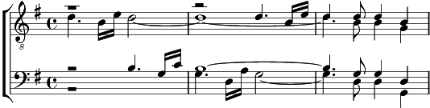

O Keltia
Sol majeur
Musique: Glenmor
Arrangement: René Abjean

O Keltia
ar mor a glemm fenoz
dindan treid an estren
Breizh a glemm
O Keltia
'n avel a yud fenoz
dindan gwask ar gall
Breizh a yud
O Keltia
Lez-Breizh a zo distro
an avel hag ar mor
sur a gano
O Keltia